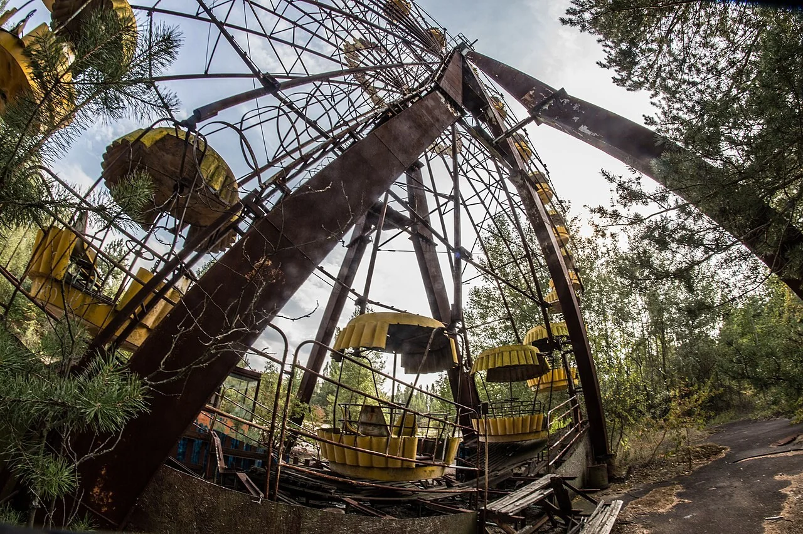
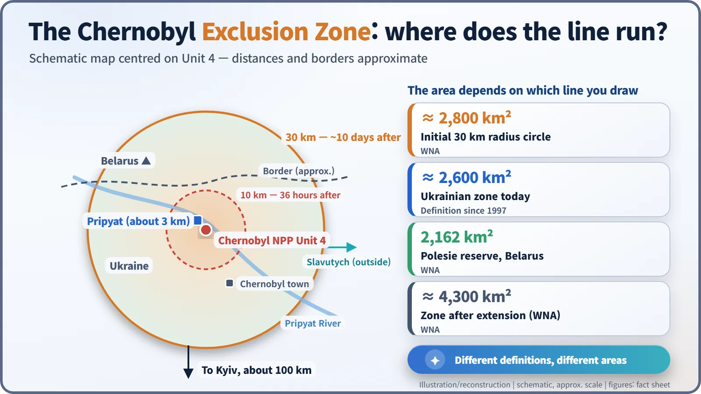
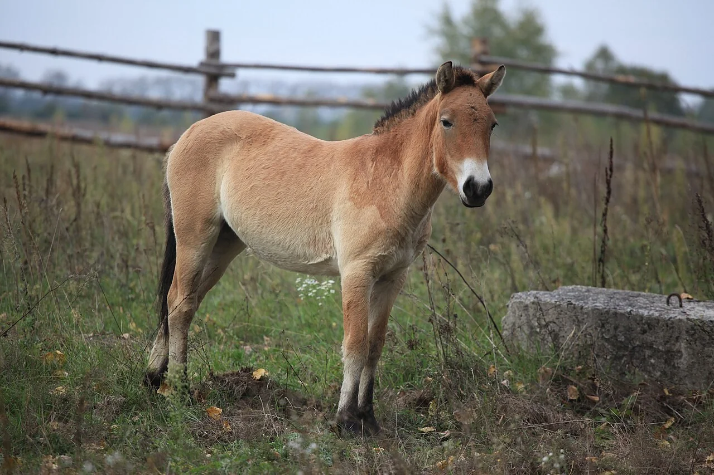
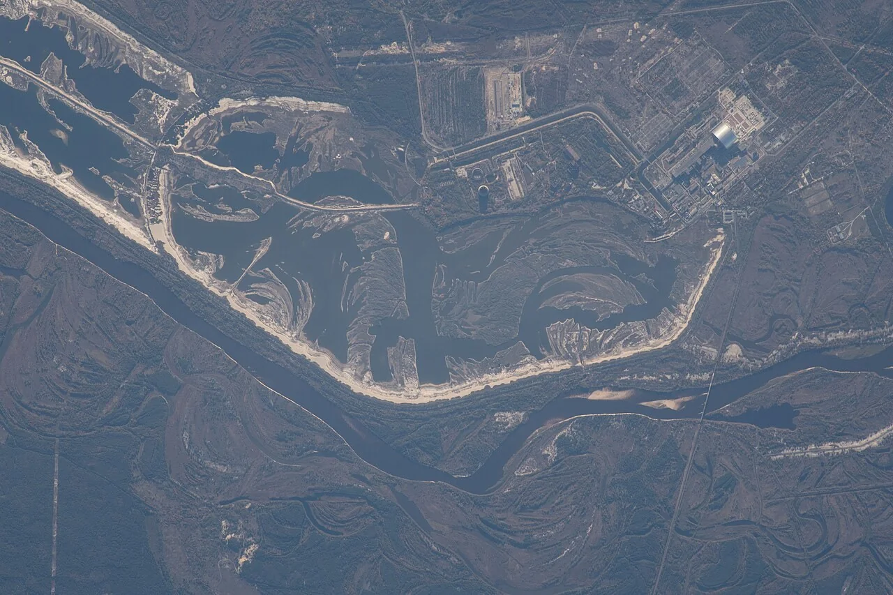
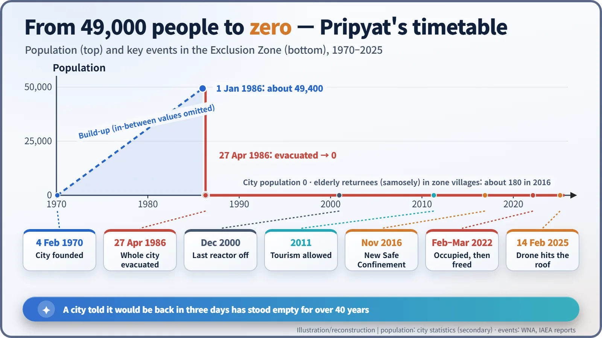

Nuclear History · 258
The Town Where the Clocks Stopped — Pripyat and the Chernobyl Exclusion Zone
A town of about 49,400 people with an average age of 26 left on buses for what was announced as a short-term evacuation; more than 40 years later it is still empty.
On 27 April 1986, the young town of Pripyat, home to about 49,400 people, was told to leave for "about three days". More than 40 years later it is still empty. Around it, the Chernobyl Exclusion Zone has become a managed no-go area, an unexpected refuge for wildlife, a tourist destination and, in 2022, a front line.
"A short-term evacuation"
"Attention, residents of Pripyat." On Sunday, 27 April 1986, a calm voice came over the loudspeakers of a young town in northern Ukraine. Because of the accident at the Chernobyl nuclear power plant, it said, radiation conditions were getting worse, and residents would be "temporarily" evacuated to nearby villages. From 2 p.m. a bus would be assigned to each apartment block. People should bring their documents, essentials and a little food, switch off lights, electrical appliances and water, and close the windows. The announcement stressed that this would be a "short-term evacuation" (wording from an English translation of the Russian broadcast). More than 40 years later, that short-term evacuation is still going on. [6]
Average age 26: a new town built by the atom
Pripyat was founded on 4 February 1970 as a planned town for the people who would build and run the Chernobyl plant, about 3 km away. It became a city officially in 1979. On 1 January 1986 it had about 49,400 inhabitants, and their average age was around 26. Some 160 apartment blocks stood alongside a swimming pool, a stadium and a palace of culture; by Soviet standards it was a modern, comfortable and very young town. [6]
In the town park, a yellow Ferris wheel had just been installed. The amusement park was due to open on 1 May for the May Day holiday. It is often said that the wheel never turned once, but some accounts say it was test-run around the time of the evacuation, so that claim is best left open. [5]

"You'll be back in three days"
The evacuation began about 36 hours after Unit 4 exploded in the early hours of 26 April. Residents were told they would be away for roughly three days, so most took little more than a change of clothes. More than a thousand buses were reportedly gathered for the operation, though archival records give different totals. Estimates of how many people left Pripyat that afternoon also vary, from about 45,000 to the low 50,000s. [1]
Pripyat was only the start. By 14 May, some 116,000 people living within a 30 km radius of the plant had been evacuated, and in the following years about 220,000 more were resettled from heavily contaminated areas — roughly 350,000 people in all. For the plant's workers and their families, a new town, Slavutych, was built outside the zone. [1] [2]
Drawing the line: 10 km, 30 km — and several areas
Once people had left, someone had to decide where the boundary ran. The first line was drawn at 10 km from the plant; about ten days after the accident it was widened to 30 km. That is the origin of the Chernobyl Exclusion Zone, which still cannot be entered without a permit.
Ask how big the zone is, though, and you will get several answers. The original 30 km circle covers about 2,800 km². The World Nuclear Association (WNA) gives about 4,300 km² for the zone after it was modified and extended to follow contamination. The Ukrainian zone alone is often given as about 2,600 km², and across the border in Belarus lies the separate 2,162 km² Polesie State Radioecological Reserve. None of these figures is simply wrong; they measure different lines. [1] [6]

Life at the plant itself did not stop overnight. The remaining Chernobyl reactors kept operating after the accident; the last one, Unit 3, was shut down in December 2000. [1]
What moved in when people moved out
With people gone, the forest moved in. In 1998, about 20 endangered Przewalski's horses were released into the zone; by around 2010 the International Atomic Energy Agency (IAEA) estimated the herd at 80–90 animals. A 2015 study in Current Biology reported that "long-term empirical data showed no evidence of a negative influence of radiation on mammal abundance". [1] [5]

That needs careful reading. More animals does not mean radiation is good for them. The mainstream interpretation is that the end of hunting, farming and logging has mattered more than the radiation. Other researchers have reported effects on birds and insects in the most contaminated spots, so the debate continues. Some people came back too: elderly villagers known as samosely ("self-settlers") quietly returned to their homes inside the zone. About a thousand or so in 1986, they numbered roughly 180 by 2016, according to commonly cited counts. [1] [6]
Tourists, soldiers and a drone
Tourism to the zone was officially allowed from 2011, and visitor numbers peaked at about 100,000 in 2019. In most places in Pripyat, the ambient dose rate is now below 1 microsievert per hour, but it varies a great deal from spot to spot, so visitors kept to set routes. In November 2016, a 36,000-tonne arch, the New Safe Confinement (NSC), was slid 327 m along rails to cover the ruined Unit 4. [1]

Then war came. On 24 February 2022 Russian forces took control of the plant's facilities; on 31 March control was returned to Ukrainian staff. Tourism has been suspended ever since. On 14 February 2025, a drone punched a hole in the NSC's roof. Ukraine blamed Russia, which denied responsibility. In early December 2025, the IAEA assessed that the structure had lost its primary safety functions, including its confinement capability. It also found no permanent damage to the load-bearing structures or monitoring systems, and radiation levels stayed normal. [1] [3] [4]

What an empty city measures
We usually measure the cost of a nuclear accident in becquerels released or millisieverts received, and those numbers matter for judging health effects. Pripyat offers another scale. A town with an average age of 26 emptied in a single afternoon, and three days became four decades. In that time the zone has been a forest, a tourist destination and a battlefield. What stopped in Pripyat was not the clocks but the everyday life of an entire town.